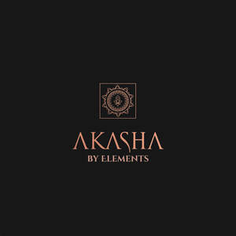

Trade Mark Journal No.2026/012 20 March 2026
UK00004314946 23 December 2025 (3,4,44)

- Class 3
- Beauty care cosmetics; Beauty serums; Beauty lotions; Beauty creams; Beauty soap; Beauty milk; Beauty gels; Beauty milks; Beauty creams for body care; Beauty balm creams; Distilled oils for beauty care; Beauty masks; Masks (Beauty -); Beauty serums with anti-ageing properties; Beauty preparations for the hair; Beauty tonics for application to the body; Beauty care preparations; Beauty tonics for application to the face; Perfumery products; Cosmetic products for the shower; Facial beauty masks; Skincare cosmetics; Natural cosmetics; Body cleaning and beauty care preparations.
- Class 4
- Tealight candles; Candle wax; Candles; Scented candles; Fragranced candles; Soy candles; Candles in tins; Perfumed candles; Candles (Perfumed -); Aromatherapy fragrance candles; Christmas lights [candles]; Paraffin wax.
- Class 44
- Beauty care; Beauty treatment; Beauty salons; Salons (Beauty -); Beauty salon services; Beauty spa services; Hygienic and beauty care; Services of a hair and beauty salon; Beauty care services; Beauty treatment services; Beauty consultation; Application of cosmetic products to the body; Beauty information services; Hygienic and beauty care services; Facial beauty treatment services; Beauty therapy services; Human hygiene and beauty care; Beauty treatment services especially for eyelashes; Application of cosmetic products to the face; Beauty consultation services; Consultancy in the field of body and beauty care; Beauty advisory services; Beauty consultancy services; Hygienic and beauty care for humans; Beauty care of feet; Beauty care services provided by a health spa.
Elements Day Spa Limited